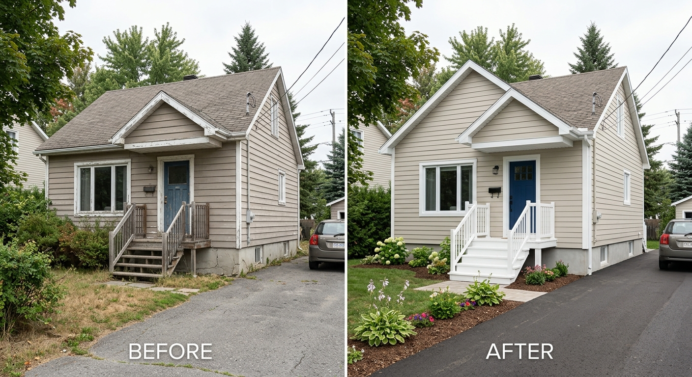

Preparation
Grattage, sablage, nettoyage, calfeutrage et appret au besoin selon l'etat des surfaces.
La peinture exterieure Terrebonne doit faire plus que bien paraitre. Elle doit adherer correctement, resister aux variations de temperature et ameliorer l'attrait de votre propriete.
Nous evaluons les surfaces avant de peindre: peinture qui ecaille, bois expose, joints ouverts, cadrages fatigues, portes ternies, balcons, clotures, garages et revetements. La bonne preparation aide a prolonger la duree du resultat et a eviter les reprises prematurees.

Grattage, sablage, nettoyage, calfeutrage et appret au besoin selon l'etat des surfaces.
Une porte d'entree, des cadrages nets et une couleur bien choisie changent rapidement la perception d'une maison.
Nous planifions selon la temperature, l'humidite et la pluie annoncee pour proteger l'adhesion.
Le bon moment se reserve rapidement pendant la saison. Demandez une estimation maintenant.